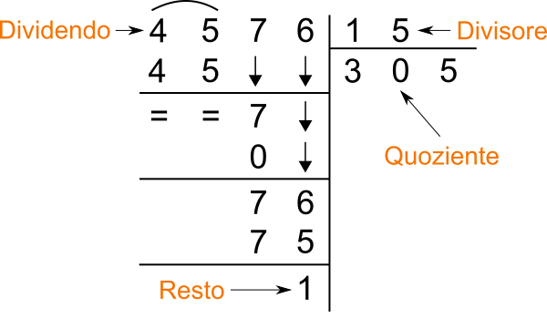
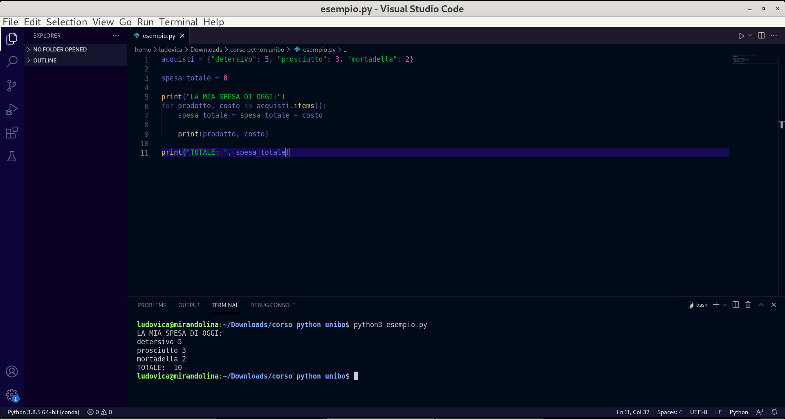
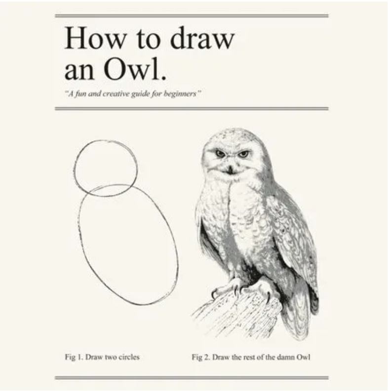
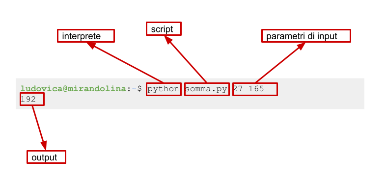

Informatica di Base
Freccia destra o spazio per avanzare. Freccia sinistra per tornare.
Ludovica Pannitto
NLP Lab Manager · Laboratorio Sperimentale LILEC · Università di Bologna
Ricerca: risorse linguistiche, linguistica cognitiva e Natural Language Processing
GitHub: ellepannitto · Scholar: profilo · Telegram: @ellepannitto
Informatica di Base · Università degli Studi di Salerno
Struttura: 30% lezione · 70% esercitazione
| Modulo | Argomento | Blocco |
|---|---|---|
| 01 | Introduzione, REPL, tipi fondamentali, Von Neumann, terminale | 1 |
| 02 | Variabili, assegnamento, if/elif/else, input() e print() | 1 |
| 03 | Istruzioni condizionali, stato del programma, errori | 1 |
| P1 | Prova intermedia — moduli 1–3 | |
| 04 | Ciclo while, sentinelle, convalida dell'input | 2 |
| 05 | Liste: creare, leggere, accumulare, redirezione dell'input | 2 |
| 06 | Funzioni: parametri, return, black box, scope | 2 |
| 07 | Memoria, passaggio degli argomenti, side effects | 2 |
| P2 | Prova intermedia — moduli 4–7 | |
| 08 | Ciclo for, range(), cicli annidati, pattern di stampa | 3 |
| 09 | File di testo, CSV, JSON, terminale avanzato, sys.argv | 3 |
| P3 | Prova intermedia — moduli 8–9 | |
| 10 | Dizionari, set, frequenze, lookup | 4 |
| 11 | Git: repository, commit, GitHub, collaborazione | 4 |
I moduli 10 e 11 non sono coperti dalle prove intermedie ma sono inclusi nello scritto finale e nell'orale.
Per ogni blocco viene considerata la valutazione più favorevole tra prova intermedia e scritto finale. Le prove intermedie superare alleggeriscono lo scritto e migliorano il risultato complessivo.
Per questo il corso insiste su tre livelli diversi:
Non ci interessa:
L'obiettivo del corso è più pragmatico: prima impariamo a leggere, scrivere e controllare programmi semplici; poi useremo queste basi per lavorare su dati e problemi reali.
int, float, str ed eseguire operazioni su di essi?acquisti = {"detersivo": 5, "prosciutto": 3, "mortadella": 2}
spesa_totale = 0
print("LA MIA SPESA DI OGGI:")
for prodotto, costo in acquisti.items():
spesa_totale = spesa_totale + costo
print(prodotto, costo)
print("TOTALE: ", spesa_totale)LA MIA SPESA DI OGGI:
detersivo 5
prosciutto 3
mortadella 2
TOTALE: 10Python è un linguaggio multiparadigma, interpretato e ad alto livello.
Queste tre parole per ora possono sembrare etichette astratte. Nel resto di questa lezione diventeranno concrete:
| Aggettivo | Significato | Dove lo vediamo |
|---|---|---|
| ad alto livello | il codice è vicino al modo in cui ragioniamo noi, lontano dalle istruzioni della macchina | Von Neumann — oggi |
| interpretato | il programma viene eseguito riga per riga da un interprete, non tradotto tutto in anticipo | interprete e compilatore — oggi |
| dinamicamente tipizzato | i tipi non si dichiarano: vengono determinati a runtime, e operazioni tra tipi incompatibili producono un errore | REPL — oggi; casting con int() e str() — modulo 2 |
| multiparadigma | supporta stili diversi di programmazione (imperativo, funzionale, a oggetti) | nel corso usiamo principalmente lo stile imperativo |
Per ora basta sapere che esistono. Alla fine della lezione queste parole avranno un significato preciso.
non vogliamo scrivere codice elegante, ma codice corretto, leggibile e controllabile.
La REPL è la modalità interattiva di Python: scrivi un'espressione, premi Invio, Python la valuta e mostra il risultato.
Per esempio:
>>> 3 * (2 + 4)
18Qui Python:
3 * (2 + 4);(2 + 4);18.Per aprirla:
python3Vedrai qualcosa di simile:
>>>Iniziamo a vedere alcuni dei tipi fondamentali di Python:
| Tipo | Significato | Esempi |
|---|---|---|
int | numeri interi | 0, 7, -12 |
float | numeri con la virgola | 3.14, 0.5, -2.0 |
str | stringhe di caratteri | "ciao", 'Python' |
Il tipo di un valore determina quali operazioni hanno senso su di esso.
| Operazione | Sintassi | Esempio |
|---|---|---|
| Somma | N + N | 3 + 15 |
| Sottrazione | N - N | 10 - 4 |
| Moltiplicazione | N * N | 3 * 7 |
| Divisione | N / N | 7 / 2 |
| Potenza | N ** N | 3 ** 2 |
| Divisione intera | N // N | 17 // 5 |
| Modulo | N % N | 17 % 5 |
>>> 3 + 15
18
>>> 3 ** 2
9
>>> 17 // 5
3
>>> 17 % 5
2
>>> 13.8 / 4
3.45Occhio a due operazioni con cui potremmo avere meno familiarità:
-//per il quoziente della divisione intera;
-%per il resto della divisione intera.
>>> 44 // 6
7
>>> 44 % 6
2L'idea è la stessa della divisione in colonna:
6 * 7 = 4244 avanzano 2
Le stringhe sono sequenze di caratteri.
| Operazione | Sintassi | Esempio | Risultato |
|---|---|---|---|
| Concatenazione | S1 + S2 | 'ab' + 'cd' | 'abcd' |
| Selezione | S[i] | 'ciao'[1] | 'i' |
| Maiuscolo | S.upper() | 'ciao'.upper() | 'CIAO' |
| Minuscolo | S.lower() | 'CIAO'.lower() | 'ciao' |
| Conteggio | S1.count(S2) | 'aaa'.count('a') | 3 |
| Lunghezza | len(S) | len('ciao') | 4 |
>>> 'Hello' + ' ' + 'world'
'Hello world'
>>> 'informatica'[0]
'i'
>>> 'informatica'[3]
'o'
>>> len('Hello world')
11
>>> 'ciao'.upper()
'CIAO'NOTA:
l'operatore+svolge due operazioni diverse a seconda del tipo di oggetto a cui lo stiamo applicando.
-+tra numeri significa somma;
-+tra stringhe significa concatenazione.
Esempio:
>>> "3" + "15""315"Qui Python non sta facendo un calcolo aritmetico: sta mettendo insieme due sequenze di caratteri.
In informatica si conta a partire da zero.
l i n g u i s t i c a
0 1 2 3 4 5 6 7 8 9 10
-11 -10 -9 -8 -7 -6 -5 -4 -3 -2 -1Si può anche contare dal fondo usando indici negativi: -1 è l'ultimo carattere, -2 il penultimo e così via.
>>> "linguistica"[0]
'l'
>>> "linguistica"[-1]
'a'
>>> "linguistica"[-3]
'i'Le sottostringhe si leggono anche per intervalli:
>>> "linguistica"[0:3]
'lin'
>>> "linguistica"[-3:]
'ica'Qui il carattere iniziale è incluso, quello finale no. Omettere il secondo indice significa "fino alla fine".
Scrivi un'espressione che calcoli:
15;12;12;137 e 12;15 e 7;3 e 7;2, 5, 9;44 e 7;"Happy families are all alike";"Happy families are all alike" e "every unhappy family is unhappy in its own way";"informatica";"supercalifragilistichespiralidoso" in maiuscolo;5 * (2 + 4)152 % 9"banana" + "fragola""olio".upper()len("carote")"cenerentola"[8]Dalle operazioni viste finora emergono due categorie:
| Espressione | Tipo in ingresso | Tipo in uscita | Cambia tipo? |
|---|---|---|---|
3 + 5 | int + int | int | no |
"ab" + "cd" | str + str | str | no |
"ciao".upper() | str | str | no |
"ciao"[0] | str | str | no |
7 / 2 | int / int | float | sì |
len("ciao") | str | int | sì |
"ciao" * 3 | str × int | str | tipi misti |
Punti da ricordare:
/ tra interi restituisce sempre un float, anche quando il risultato è intero (4 / 2 dà 2.0);len() prende una stringa e restituisce un intero;* tra stringa e intero produce una stringa.Nel modulo 2 vedremo anche int() e str(), funzioni che cambiano tipo in modo esplicito — si chiamano cast.
Un linguaggio di programmazione è un linguaggio formale: a differenza dell'italiano o dell'inglese, non ammette ambiguità. Ogni simbolo ha un significato preciso e le regole di combinazione sono rigide.
Possiamo distinguere tre livelli:
| Componente | Domanda | Esempio in Python |
|---|---|---|
| Vocabolario | Quali simboli sono ammessi? | 3, "ciao", +, if, def |
| Sintassi | Come si combinano correttamente? | 3 + 2 ✓ — 3 + * 2 ✗ |
| Semantica | Che cosa significa quello che scrivo? | 3 + 2 produce 5; "a" + 2 è un errore di tipo |
La distinzione sintassi/semantica è utile già per leggere i messaggi di errore:
SyntaxError) significa che hai scritto qualcosa che l'interprete non riesce nemmeno a leggere — come una frase con le parole nell'ordine sbagliato;Python è il linguaggio: una specifica formale di vocabolario, sintassi e semantica.
Quello che installiamo è l'interprete, cioè un programma capace di:
In questo senso non "installiamo il linguaggio" come idea astratta: installiamo uno strumento che sa dargli significato.
I linguaggi di programmazione non stanno tutti alla stessa distanza dalla macchina.
| Livello | Idea generale | Esempi |
|---|---|---|
| Alto livello | più vicino al modo in cui ragioniamo noi | Python, Java |
| Basso livello | più vicino alle istruzioni effettive della macchina | C, Assembly |
In Python, len("ciao") è una singola istruzione leggibile. La CPU, invece, capisce solo operazioni elementari su sequenze di bit: la distanza tra le due cose è enorme, e l'interprete la colma.
Due famiglie importanti di traduttori:
| Strumento | Che cosa fa | Esempio tipico |
|---|---|---|
| Interprete | legge ed esegue il programma riga per riga | Python |
| Compilatore | traduce tutto il programma in anticipo, poi produce un eseguibile | C, C++ |
Immaginate un libro scritto in caratteri thai che volete leggere.
กล้วยไม้เป็นพืชที่มนุษย์รู้จักกันดีมานาน
ในโลกมีกล้วยไม้หลากหลายสกุลและชนิดพันธุ์ในธรรมชาติพบมาแล้วไม่น้อยกว่า ๒๕,๐๐๐ ชนิด
โดยเฉพาะในเขตอบอุ่นและเขตร้อน บริเวณทวีปเอเซีย อเมริกาใต้ และแอฟริกา เป็นแหล่งกล้วยไม้ที่มีความหลากหลายมากที่สุด
กล้วยไม้เป็นต้นไม้ที่มีระบบรากสำหรับหาอาหารเช่นเดียวกับต้นไม้ชนิดอื่น| Interprete | Compilatore | |
|---|---|---|
| Quando si scoprono gli errori | durante l'esecuzione, alla riga sbagliata | prima dell'esecuzione, in fase di traduzione |
| Modalità di lavoro | interattiva (REPL) | compile → esegui |
| Eseguibile prodotto | no — il codice viene riletto ogni volta | sì — gira senza rifare la traduzione |
Tutti i computer moderni seguono un'architettura descritta da Von Neumann negli anni '40, che rimane valida ancora oggi.
L'idea centrale è questa: un programma è una sequenza di istruzioni memorizzate insieme ai dati. La CPU le legge una alla volta, le esegue, e produce un risultato.
┌──────────────────────────┐
│ CPU │
│ ┌────────┐ ┌────────┐ │
Input device ──►│ │ ALU │ │ Reg. │ │──► Output device
│ └────────┘ └────────┘ │
│ ┌──────────────┐ │
│ │ Control Unit │ │
│ └──────────────┘ │
└────────────┬─────────────┘
│ ▲
▼ │
┌──────────────────────────┐
│ Memory Unit │
└──────────────────────────┘La CPU è il motore del computer. Al suo interno troviamo:
| Componente | Ruolo | Esempio concreto |
|---|---|---|
| ALU | esegue operazioni aritmetiche e logiche | calcola 3 + 2, confronta x > 0 |
| Registri | memoria interna alla CPU, piccolissima e velocissima | tiene il valore corrente mentre la CPU ci lavora |
| Control Unit | coordina il flusso: legge l'istruzione, decodifica, attiva ALU | decide quale passo eseguire dopo |
La memoria (RAM) e il disco non sono la stessa cosa:
| Componente | Velocità | Persistenza | Cosa ci vive |
|---|---|---|---|
| RAM | veloce | volatile (si svuota a spegnimento) | variabili, istruzioni del programma in esecuzione |
| Disco | lento | persistente (resta senza corrente) | file .py, documenti, immagini |
I dispositivi di input/output collegano il computer al mondo esterno: tastiera, schermo, mouse, ma anche i file che leggiamo e scriviamo.
Tra poco lanceremo i nostri primi script dal terminale. Ogni volta che lo facciamo, sotto il cofano succede questo:
Le variabili "spariscono" quando il programma finisce perché vivono in RAM, non su disco. Per conservare un risultato bisogna scriverlo esplicitamente su file.
Quando diciamo "apro il programma Word" o "uso Excel", usiamo la parola programma nel senso di applicazione: un software completo con interfaccia grafica, menu, impostazioni, cronologia. Word ed Excel contengono al loro interno migliaia di procedure distinte.
In questo corso useremo programma in un senso più specifico: una sequenza di azioni che prende dati in ingresso, li elabora e produce un risultato.
| Fase | Domanda tipica |
|---|---|
| Input | quali dati ricevo? |
| Elaborazione | quali regole applico? |
| Output | che risultato restituisco? |
I programmi che scriveremo fanno una cosa sola, in modo chiaro e verificabile. Esempi:
| Programma | Input | Output |
|---|---|---|
| somma di due numeri | a, b | a + b |
| conteggio caratteri | una stringa | un numero |
| scelta del file giusto | nome e percorso | file aperto o errore |
Qui entra in gioco il sistema operativo.
Quando un programma lavora con file, cartelle e dati presenti sul computer, non accede da solo all'hardware: passa attraverso il sistema operativo.
In pratica, il sistema operativo:
Per iniziare a programmare servono tre strumenti distinti:
| Strumento | A cosa serve | Esempi |
|---|---|---|
| Interprete | esegue codice Python | python3, REPL |
| Editor | scrive e salva file di testo | VSCodium, VS Code |
| Terminale | lancia comandi e programmi | zsh, PowerShell, bash |
è importante non confonderli:
>>> 3 * (2 + 4)
18Questo è diverso da quello che succede in uno script:
.py il valore viene mostrato solo se usiamo esplicitamente print(...).La REPL è quindi utile per:
Normalmente però noi vogliamo scrivere un programma che possiamo salvare e eseguire nuovamente. Un programma Python di questo genere va scritto in un text editor che lavora su testo semplice.
strumenti come Word non vanno bene, perché aggiungono formattazione e metadati che non fanno parte del codice.
Una sessione di lavoro tipica è questa:
.py nell'editor;python3 nome_file.py;
È utile imparare fin da subito a non dipendere solo da interfacce grafiche:
Alcune abitudini utili fin dall'inizio:
Se qualcosa non funziona:

Programmare include sempre una quota di
trial and error. Non è un'anomalia: è il lavoro.
In ogni caso: "Don't Panic!"
Il terminale è l'interfaccia a testo del sistema operativo. Il programma che interpreta i comandi che scriviamo si chiama shell.
I sistemi operativi usano shell diverse:
| Sistema operativo | Shell predefinita | Prompt tipico |
|---|---|---|
| macOS | zsh | % |
| Linux | bash | $ |
| Windows | PowerShell | > |
bash (Bourne Again SHell) è la shell più diffusa nei sistemi Unix. zsh è compatibile con bash e aggiunge funzionalità extra. I comandi che usiamo a lezione funzionano allo stesso modo in entrambe.
Su Windows il terminale nativo è PowerShell, che ha una sintassi parzialmente diversa. I comandi di base (pwd, ls, cd) funzionano anche lì, ma le differenze emergono non appena si va oltre le operazioni elementari.
Per seguire il corso con gli stessi comandi bash:
A lezione useremo sintassi bash. Se siete su Windows con PowerShell, segnalate le differenze quando le incontrate.
I comandi visti a lezione funzionano in entrambi i terminali:
| Operazione | bash / Git Bash | PowerShell |
|---|---|---|
| cartella corrente | pwd | pwd |
| contenuto cartella | ls | ls |
| entra in cartella | cd nome | cd nome |
| torna su | cd .. | cd .. |
| esegui script Python | python3 file.py | python file.py |
La differenza più comune: il separatore nei percorsi è \ anziché / (anche se PowerShell accetta entrambi).
Il terminale serve a spostarsi nelle cartelle e lanciare programmi.

Comandi essenziali:
| Comando | Significato |
|---|---|
pwd | mostra la cartella corrente |
ls | elenca file e cartelle |
cd nome-cartella | entra in una cartella |
cd .. | torna alla cartella padre |
mkdir nome | crea una nuova cartella |
python3 file.py | esegue uno script Python |
/ su Unix, C:\ su Windows);Immagina questa struttura di cartelle:
/
└── home/
└── studente/
├── corso/
│ ├── script.py
│ └── dati/
│ └── input.txt
└── documenti/
└── appunti.txtSe sei dentro corso/, questi percorsi sono equivalenti:
| Percorso | Tipo | Raggiunge |
|---|---|---|
/home/studente/corso/script.py | assoluto | script.py |
script.py oppure ./script.py | relativo | script.py |
dati/input.txt | relativo | input.txt |
../documenti/appunti.txt | relativo (salendo di uno) | appunti.txt |
/home/studente/documenti/appunti.txt | assoluto | appunti.txt |
Le scorciatoie fondamentali:
. — la cartella corrente.. — la cartella superiore../../ — due livelli suL'importante non è usare sempre la forma più lunga, ma capire che il percorso deve descrivere correttamente come arrivare al file partendo dalla posizione attuale.
Esempio:
pwd
ls
cd guida-lezioni
ls
cd ..
python3 scripts/genera_programma.pySe un comando "non trova il file", il primo controllo da fare è quasi sempre la cartella corrente.
Creiamo insieme la struttura di cartelle che useremo per tutto il corso.
Passo 1 — parti dalla tua cartella home e crea una cartella per il corso:
cd ~
mkdir informatica-di-base
lsIl simbolo ~ (tilde) è una scorciatoia per la tua cartella home — quella che il terminale apre per default all'avvio. Su macOS corrisponde a /Users/tuonome, su Linux a /home/tuonome, su Windows (Git Bash) a C:\Users\tuonome.
Per digitare ~:
| Sistema | Combinazione |
|---|---|
| macOS | Alt + 5 |
| Windows (tastiera italiana) | Alt Gr + ì |
| Linux | Alt Gr + ì oppure Alt Gr + ~ a seconda della tastiera |
Verifica che informatica-di-base compaia nell'elenco.
Passo 2 — entra nella cartella e crea una sottocartella per questa lezione:
cd informatica-di-base
mkdir modulo-01
lsPasso 3 — entra nella sottocartella e controlla dove sei:
cd modulo-01
pwdDovresti vedere qualcosa come /home/studente/informatica-di-base/modulo-01.
Passo 4 — torna su di un livello e poi ancora su, verificando ogni volta:
cd ..
pwd
cd ..
pwdPasso 5 — apri la cartella informatica-di-base nell'editor:
cd informatica-di-base
code .Su alcune installazioni il comando è codium . (VSCodium) oppure code . (VS Code). Il . indica "apri la cartella corrente".
Questa cartella diventerà il vostro spazio di lavoro per tutto il corso. Ogni modulo avrà la sua sottocartella.
Nella REPL ogni espressione produce subito un risultato visibile. In un file le cose funzionano diversamente.
Crea un file prova.py nella cartella modulo-01 e scrivici dentro:
3 + 5Poi eseguilo dal terminale:
python3 prova.pyNon succede niente. Il calcolo viene eseguito, ma il risultato non viene mostrato da nessuna parte. Per produrre output bisogna usare esplicitamente print():
print(3 + 5)Ora eseguilo di nuovo: vedrai 8.
print() è esplicita, la REPL no| REPL | Script | |
|---|---|---|
3 + 5 | mostra 8 automaticamente | nessun output |
print(3 + 5) | mostra 8 | mostra 8 |
Nella REPL il valore dell'espressione viene mostrato per comodità interattiva. In uno script il programma non sa dove vuoi mandare l'output — sullo schermo, su un file, da qualche altra parte — a meno che tu non glielo dica.
Prova a rinominare il file togliendo l'estensione:
python3 provaFunziona ugualmente. Prova anche con .txt:
python3 prova.txtAnche questo funziona. L'interprete Python non guarda l'estensione: legge il contenuto e lo esegue. L'estensione .py è una convenzione per gli esseri umani — aiuta l'editor a colorare il codice e te a capire cosa c'è dentro — ma non cambia nulla per l'interprete.
Riprendi gli esercizi della REPL e salvali in un file esercizi-repl.py, uno per riga, ciascuno dentro una print(). Per esempio:
print(3 + 5)
print(len("Happy families are all alike"))
print("informatica"[0])Esegui il file e verifica che l'output corrisponda a quello che avevi ottenuto nella REPL.
Nella cartella esercizi/modulo-1/ ci sono i file es1.py … es7.py. Non aprirli.
Per ciascuno:
cd guida-lezioni/esercizi/modulo-1;python3 es1.py basilico
python3 es1.py ciao
python3 es1.py informaticaStampa il numero di caratteri della parola passata come argomento (len).
8
4
11python3 es2.py basilico
python3 es2.py informatica
python3 es2.py uvaStampa il primo e l'ultimo carattere della parola (s[0] e s[-1]).
b o
i a
u apython3 es3.py basilico 0
python3 es3.py basilico 3
python3 es3.py informatica 5Stampa il carattere in posizione n (il secondo argomento) della parola. Ricorda che si conta da zero.
b
i
rProva a passare un indice troppo grande: cosa succede?
python3 es4.py ciao
python3 es4.py uva
python3 es4.py mela
python3 es4.py limoneStampa 0 se la lunghezza della parola è pari, 1 se è dispari (len(s) % 2).
0
1
0
0python3 es5.py basilico
python3 es5.py ciao
python3 es5.py pythonStampa la parola senza il primo e l'ultimo carattere (s[1:-1]).
asilic
ia
ythoCosa succede con una parola di due caratteri? E con una di uno solo?
python3 es6.py 3
python3 es6.py 5
python3 es6.py 10Stampa il quadrato e il cubo del numero passato come argomento (n * n e n ** 3).
9 27
25 125
100 1000Questo esercizio usa operazioni che probabilmente non avete ancora incontrato. Provate più combinazioni — alcune produrranno output inaspettato, altre genereranno un errore.
python3 es7.py ciao 2
python3 es7.py ciao 0
python3 es7.py ciao 3
python3 es7.py ciao 10
python3 es7.py x 1
python3 es7.py informatica 4Prima di aprire il file: riuscite a capire cosa fa? Riuscite a spiegare perché alcune chiamate generano un errore?
Il programma prende una stringa s e un numero n e fa tre cose:
s * n — l'operatore * tra stringa e intero ripete la stringa n volte;s[n] — il carattere in posizione n;s[:n].upper() + s[n:] — i primi n caratteri in maiuscolo concatenati al resto.ciaociao
a
CIao
← stringa vuota (s * 0)
c ← s[0]
ciao ← "" + "ciao"
ciaociaociao
o
CIAoCon n = 10 le righe 2 e 3 generano un errore:
IndexError: string index out of rangeperché "ciao" ha solo 4 caratteri (indici 0–3) e s[10] non esiste. La prima riga invece funziona: s * 10 non ha limiti.
Con n = 0: s * 0 produce una stringa vuota — non un errore. Perché?